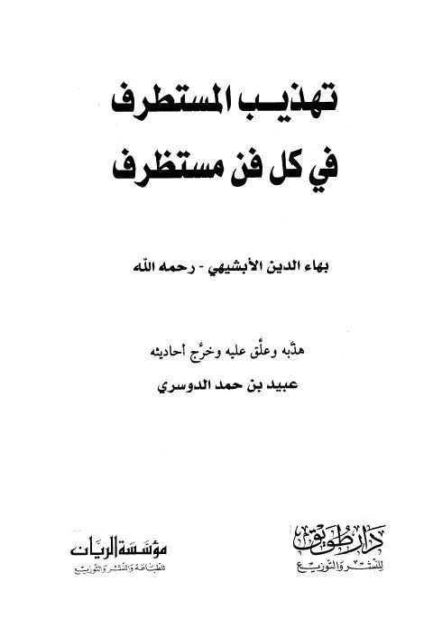

Downloads need an internet connection.
تهذيب المستطرف في كل فن مستظرف
Authors: بهاء الدين الأبشيهي
Editors: عبيد بن حمد الدوسري
Publishers: مؤسسة الريان دار طويق
**▫️ العنوان: تهذيب المستطرف في كل فن مستظرف** ▪️ المؤلف: #بهاء_الدين_الأبشيهي ▫️ المحقق: #عبيد_بن_حمد_الدوسري ▪️ الناشر: #دار_طويق_للنشر_والتوزيع • #مؤسسة_الريان_للطباعة_والنشر_والتوزيع ▫️ تاريخ النشر: 1428ه 2007م ▪️ بلد النشر: الرياض، #السعودية ▫️ الطبعة: 1 ▪️ عدد الأجزاء: 1 ▫️ الصفحات: 229 ▪️ نوع الوعاء: #كتاب ▫️ التصنيف الرئيسي: #اللغة_العربية ▪️ التصنيف الفرعي: #أدب ۪